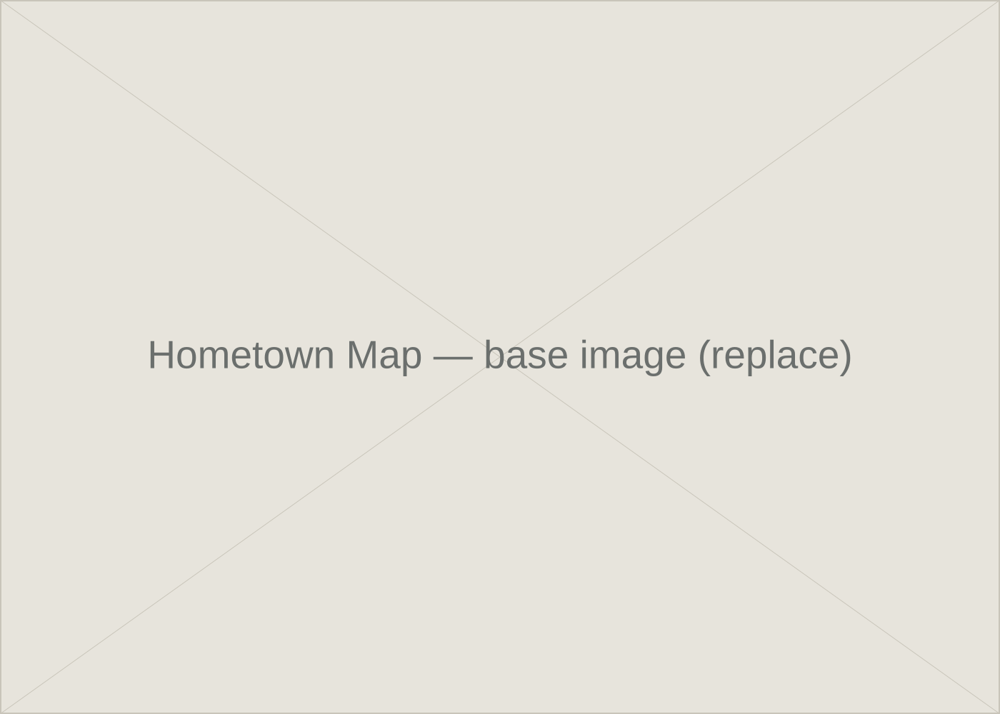
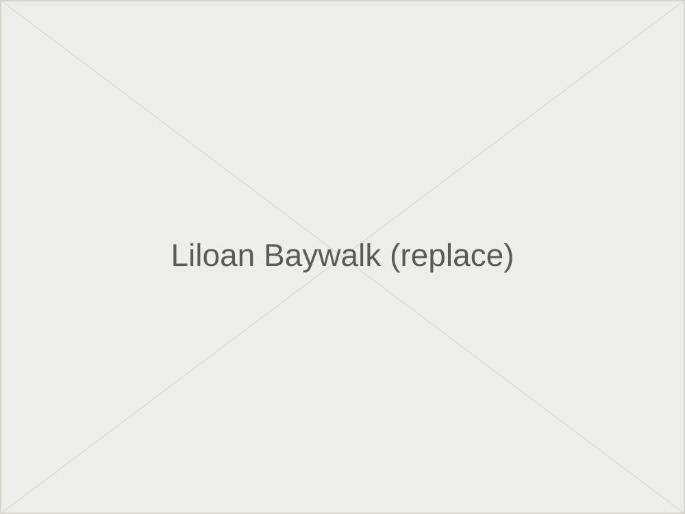
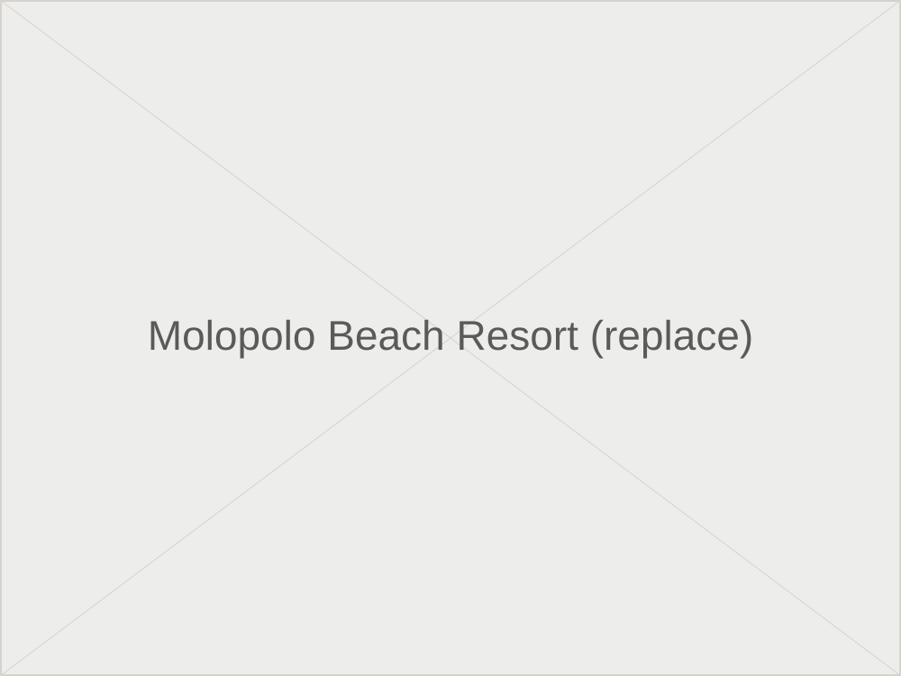
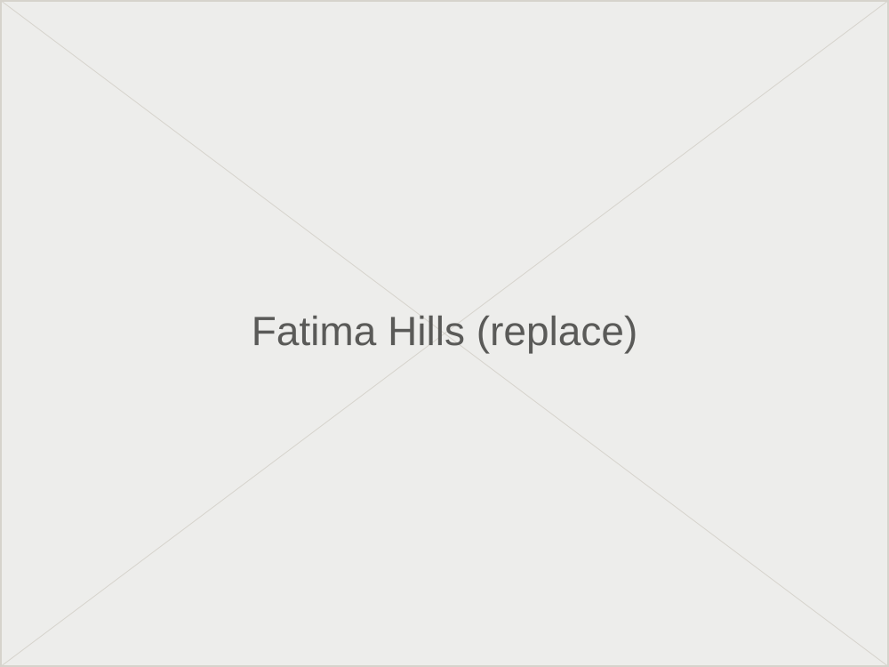
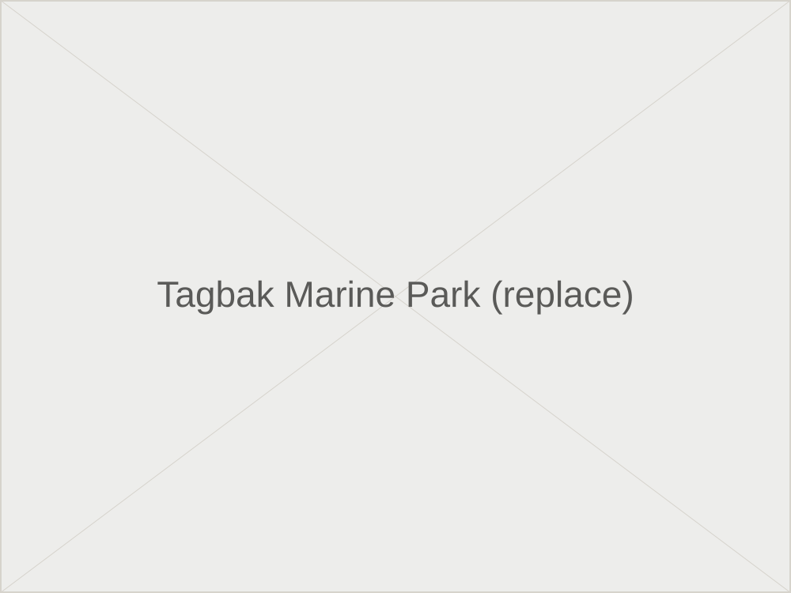
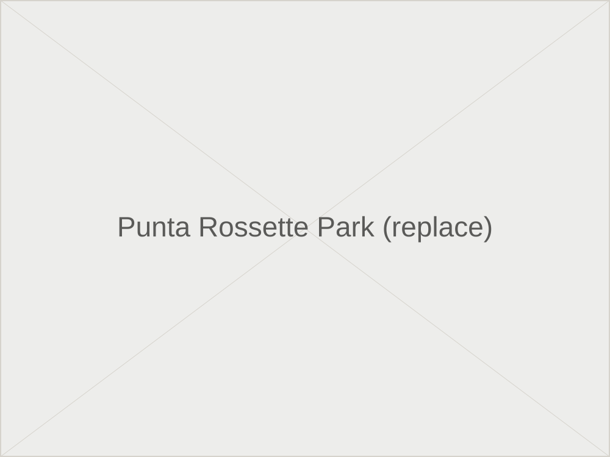

Hover a marker on the hometown map below and its name appears; click it to jump straight to that spot's details further down the page.

Markers are placeholders until the real map artwork and coordinates are supplied.
Each spot below corresponds to one marker on the map above.
Body text placeholder — a short description of the baywalk goes here once supplied.
Additional description placeholder — more photos and details will go here.


Body text placeholder — a short description of the resort goes here once supplied.
Additional description placeholder — more photos and details will go here.
Body text placeholder — a short description of Fatima Hills goes here once supplied.
Additional description placeholder — more photos and details will go here.


Body text placeholder — home to seagrass beds that quietly pull CO2 out of the water, among the details to be filled in once supplied.
Additional description placeholder — more photos and details will go here.
Body text placeholder — a short description of Punta Rossette Park goes here once supplied.
Additional description placeholder — more photos and details will go here.

Separate from the five map markers above — additional spots worth a stop.
Body text placeholder — details to follow once supplied.
Body text placeholder — details to follow once supplied.
Body text placeholder — details to follow once supplied.
Body text placeholder — details to follow once supplied.
Body text placeholder — details to follow once supplied.